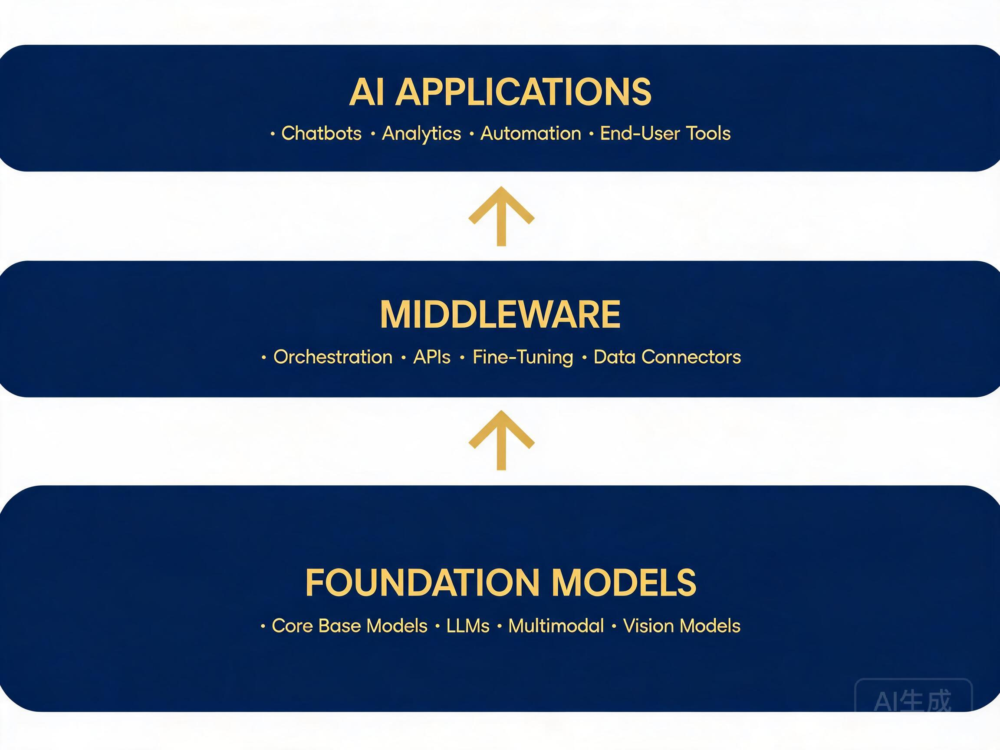
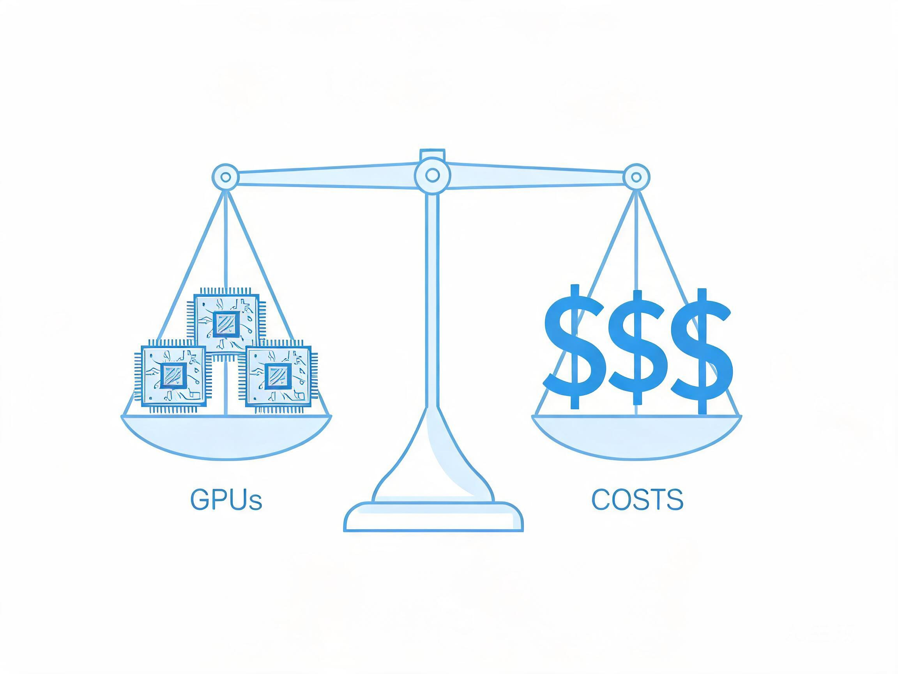
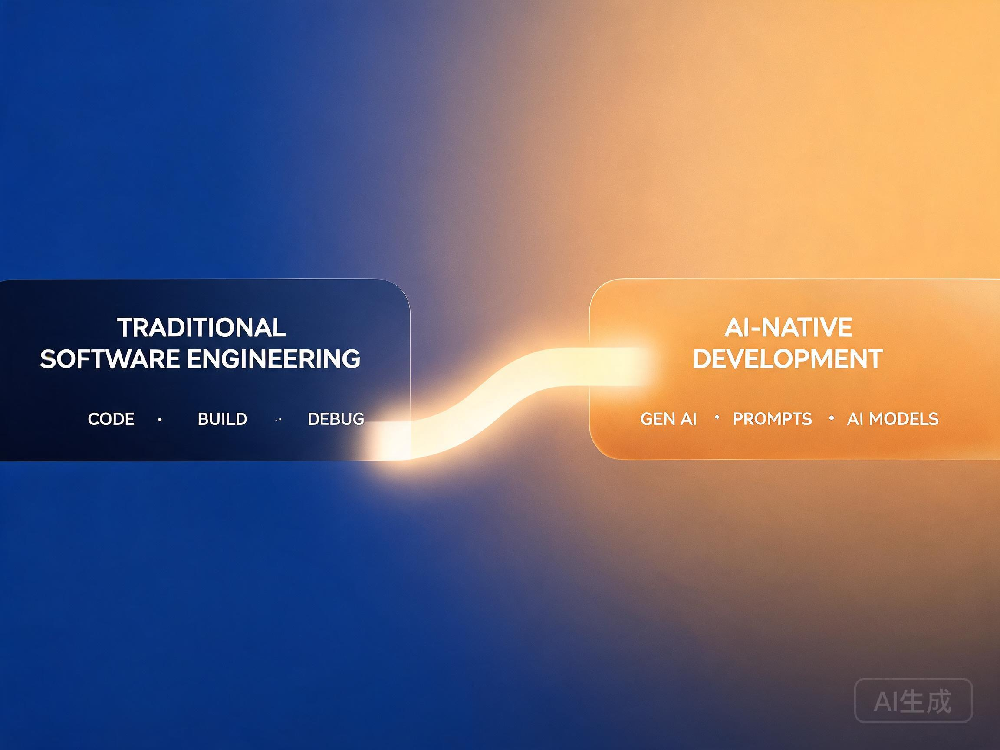

2026 年，AI 已经不是「要不要用」的问题，而是「怎么用得更好、更快、更安全」。作为 CTO 或技术负责人，你每天面对的不只是技术选型——你要回答 CEO 的 ROI 追问，要稳住团队不被焦虑吞没，要在供应商的漫天承诺中保持清醒。
这篇文章不画饼。基于我和数十位技术负责人的交流，梳理了五个你必须直面的实操问题。
一、技术战略：模型 or 应用？
这是每个 CTO 被问到的第一个问题。
2025 年以来，基础模型的迭代速度明显放缓。GPT-5 跳票，Claude 4 只是线性提升，开源阵营的 Llama 4 和 DeepSeek V3 把性价比推到了极致。这意味着：模型本身不再是壁垒，应用场景才是。

▲ AI 技术栈三层模型：基础设施 → 中间件 → 应用层
「不要自研大模型，除非你的融资额超过 10 亿美元。」—— 这句话在 2024 年是警告，在 2026 年是常识。
实操建议
- 基础模型用最好的：Claude 做复杂推理、DeepSeek 做高性价比批量任务、GPT-4o 做多模态。用 API，不要自建。
- 中间件自建：RAG 管线、Agent 编排、Prompt 管理、评估体系——这些是护城河。
- 应用层深耕垂直场景：选择一个你比任何人都懂的行业痛点，用 AI 重构它。
二、团队重构：AI Native 团队怎么搭？
传统团队的技能树正在加速折旧。
一个残酷的现实：一个熟练使用 AI 编程助手的初级工程师，产出可能超过不用 AI 的高级工程师。这不是能力问题，是杠杆效应。CTO 的核心任务变成了——让整个团队学会用 AI 做乘法。
▲ 未来的研发团队：人 + AI Agent 协同工作
团队新角色
- AI 效能教练：不写代码，专门帮团队提高 AI 工具使用效率。ROI 惊人——一个教练提升 20 人产出 30%，相当于多招 6 个人。
- Prompt 工程师 → Agent 架构师：2024 年的 Prompt 工程已经演化为 Agent 系统设计。需要懂工具调用、记忆管理、多步推理。
- AI 安全审计：模型幻觉、Prompt 注入、数据泄露——每个都是生产事故的导火索。
- 传统工程师转型：不是淘汰，是升级。核心能力从「写代码」变为「定义问题 + AI 协作 + 审查输出」。
三、落地实践：从 PoC 到生产
2025 年行业最讽刺的数据：90% 的 AI 概念验证（PoC）项目从未进入生产环境。
原因三个：幻觉不可控、延迟太高、成本算不过来。
幻觉问题——分层防御
- 第一层：RAG + 引用溯源，让模型基于你的数据回答，每个结论可追溯到原文。
- 第二层：输出约束，用结构化输出（JSON Schema）限制格式，减少「自由发挥」。
- 第三层：人工审核节点，对高风险场景（医疗、金融、法律）强制人工确认。
延迟问题——善用缓存和路由
- 语义缓存：相似问题直接返回缓存结果，减少 60% API 调用。
- 模型路由：简单问题走小模型（Haiku/DeepSeek），复杂问题走大模型（Opus/GPT-4o）。
- 流式输出：首字延迟控制在 500ms 内，用户感知就是「即时响应」。
# 模型路由伪代码示例
def route_query(user_input):
complexity = estimate_complexity(user_input)
if complexity < 0.3:
return "deepseek-v3" # 快 + 便宜
elif complexity < 0.7:
return "claude-sonnet-4" # 均衡
else:
return "claude-opus-4" # 深度推理四、成本与 ROI：算力账怎么算？
CEO 最关心的问题，也是 CTO 最难回答的问题。

▲ AI 投入不是无底洞——精细化的成本管控才能持续
真实成本全景
| 成本项 | 月均（10 人团队） |
|---|---|
| API 调用（Claude + DeepSeek） | ¥8,000 – 30,000 |
| AI 编程工具（Cursor / Copilot 席位） | ¥2,000 – 4,000 |
| 向量数据库 + Embedding | ¥3,000 – 8,000 |
| GPU 推理（如需自建） | ¥20,000+ |
| AI 效能教练（1 人） | ¥25,000+ |
| 合计 | ¥60,000 – 90,000/月 |
ROI 计算公式
不要用「AI 提效 30%」这种虚的。算清楚：
ROI = (节省的人力成本 + 新增收入 − AI 总成本) ÷ AI 总成本 × 100%
一个真实案例：某 SaaS 公司引入 AI 代码助手后，10 人团队月度产出从 120 个 Story Points 提升到 180 个（+50%），相当于省了 5 个人的成本（约 ¥12.5 万/月），而 AI 工具总成本不到 ¥1 万/月。ROI = 1150%。
五、安全与合规：不可忽视的红线
2025 年，某知名企业因员工将客户数据粘贴到 ChatGPT 导致重大泄露。罚款金额：2000 万欧元（GDPR）。这不是孤例。
必须做到的三件事
- 数据边界：内部敏感数据绝不经过公共 API。使用私有化部署（DeepSeek 开源版）或企业版 API（数据不用于训练）。
- Prompt 注入防护：用户输入和系统指令严格隔离。永远不要让用户输入直接拼接到系统 Prompt 中。
- 输出审计：所有 AI 生成内容留存日志，可追溯、可回滚。
结语：CTO 的新使命

▲ 从传统工程到 AI Native——不是跳跃，是演进
AI 时代的 CTO，不再只是「技术选型者」。你是战略翻译官——把 AI 能力翻译成业务价值；是团队催化剂——让每个工程师发挥 10 倍效能；是风险守门人——在创新和安全之间找到平衡。
这个角色很累，但也前所未有地重要。
共勉。